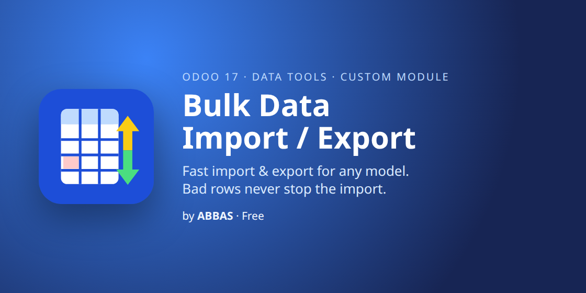
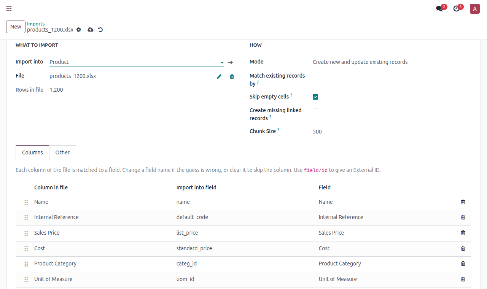
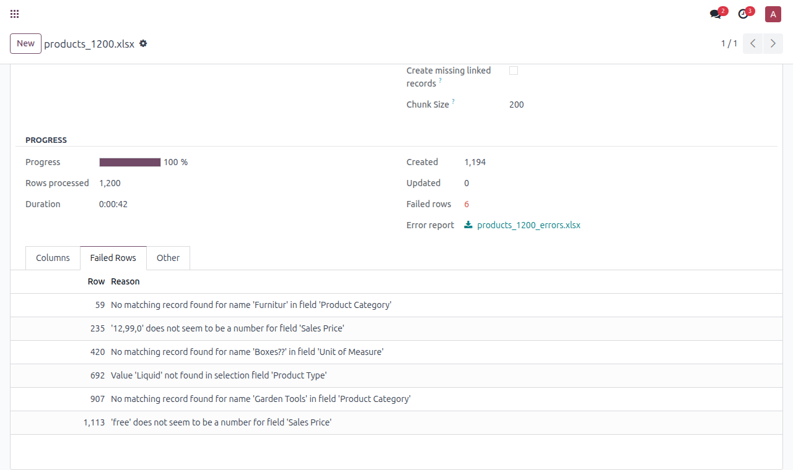
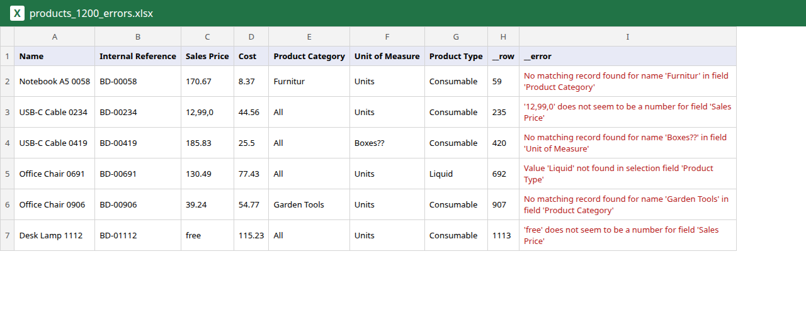
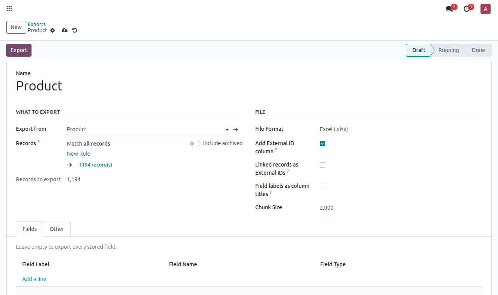

Import and export any model, fast, even with millions of rows and messy files

Odoo's standard import stops at the first problem and makes you fix the whole file before anything is saved. This module saves every good row, sets the bad ones aside, and gives you an Excel file of the failed rows with the reason next to each one. Fix them and import that same file again.




addons_path) and restart Odoo. On Odoo.sh, push the folder to your repository instead.Write to me and I will answer myself. I also build custom Odoo modules and integrations.
abbasodolution@gmail.com